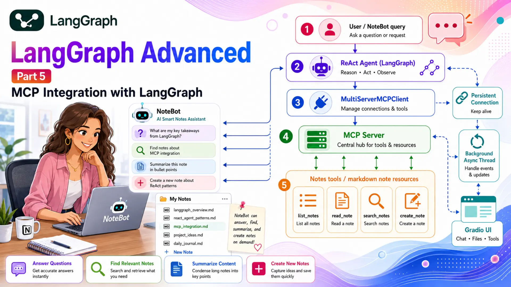
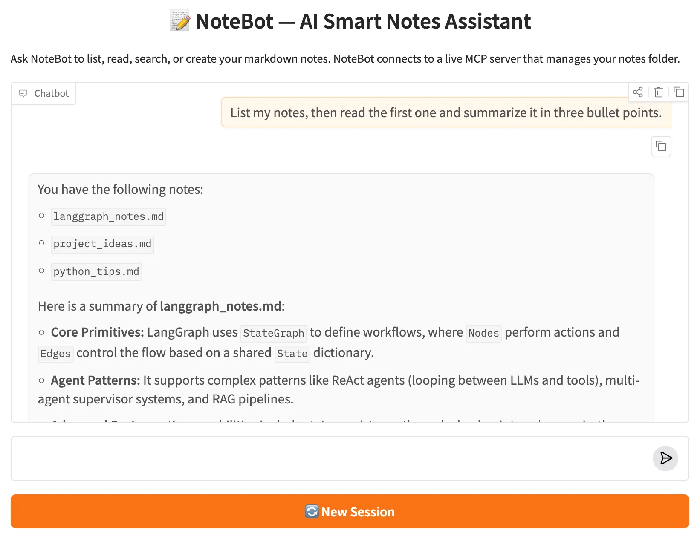

LangGraph Advanced: Part 5 — MCP Integration with LangGraph

📚 Table of Contents
🧩 1. Introduction
Every tool built in the previous posts — the finance tools in Basics Part 5, the real estate tools in Advanced Part 4 — had something in common: someone had to write Python code for each one. When requirements change, you update the code. When you want the same tools in a different agent, you copy the code. This approach works, but it doesn't scale.
The Model Context Protocol (MCP) changes this. MCP is an open standard that defines a common interface for AI agents to connect to external tools, resources, and data sources — regardless of which AI framework they use. Instead of writing a custom Python wrapper for every service, you build one MCP server and any compliant agent can use it.
In this post, we build NoteBot — an AI Smart Notes Assistant. NoteBot connects to a Python MCP server that manages a folder of markdown notes and exposes four tools: list_notes, read_note, search_notes, and create_note. NoteBot uses those tools through a LangGraph ReAct agent to answer questions, find relevant notes, summarise content, and create new notes on demand.
MCP Server
A Python FastMCP server that exposes notes tools through a standardised protocol interface.
MultiServerMCPClient
Connects to one or more MCP servers and returns LangChain-compatible tool objects.
ReAct Agent
Built with create_react_agent — same loop as Part 4, tools now come from MCP.
Persistent Connection
Background asyncio thread keeps the MCP connection alive inside the Gradio web UI.
⚙️ 2. Installation & Setup
This project is part of the shared LangGraph series environment. All packages are installed once from a single requirements.txt at the root of the langgraph/ folder.
Python version:
Create and activate a virtual environment:
Install dependencies — two new packages are added for MCP:
Two new packages: mcp is the official Python SDK for building MCP servers (provides FastMCP). langchain-mcp-adapters bridges those servers to LangChain/LangGraph by converting MCP tools into StructuredTool objects the agent can call.
Gemini API key — create a .env file in the langgraph/ folder:
Get a free key at Google AI Studio. Never commit .env — it is already in .gitignore.
⚙️ Configuring the LLM
config.py reads the environment variables; llm.py wraps ChatGoogleGenerativeAI — identical to every other post in this series:
🔌 3. What is MCP?
The Model Context Protocol (MCP) is an open standard published by Anthropic that defines how AI models connect to external tools and data sources. Think of it like a USB standard for AI: instead of every device needing a custom cable for every computer, you build to the standard once and everything just works together.
MCP has two sides: a server that exposes tools, resources, or prompts; and a client that connects to servers and calls their tools. The server and client communicate via a transport layer — the most common being stdio (subprocess pipes, for local servers) and SSE (HTTP server-sent events, for remote servers).
MCP vs custom tools: In previous posts, tools were Python classes or functions defined directly in the agent's codebase. With MCP, the tools live in a separate server process. The agent only knows the tool's name, description, and parameter schema — not the implementation. This means you can swap, update, or share the server without touching the agent.
Here's a side-by-side comparison of both approaches for the same tool:
| Aspect | Custom BaseTool (Part 4) | MCP Tool (Part 5) |
|---|---|---|
| Defined in | Agent's Python codebase | Separate MCP server process |
| Schema | Pydantic BaseModel (args_schema) | Auto-generated from type hints + docstring |
| Agent change needed? | Yes — import new tool class, add to TOOLS | No — server exposes it; client discovers it |
| Reuse across agents | Copy the file / package | Connect any agent to the same MCP server |
| Language | Must be Python | Any language (Python, Node.js, Go, …) |
In this project, MultiServerMCPClient from langchain-mcp-adapters handles the connection. Instantiate it directly, then call await client.get_tools() to retrieve all tools from all connected servers as a flat list — those tools work exactly like any other LangChain tool.
The MCP_CONFIG dict maps server names to connection settings. With stdio transport, MultiServerMCPClient starts the server as a subprocess when you enter the context and terminates it when you exit. With sse transport, it connects to an already-running HTTP server instead.
📂 4. The Notes MCP Server
The MCP server lives in mcp_server/notes_server.py and uses FastMCP — a high-level Python helper that turns annotated functions into MCP tools with minimal boilerplate. The server manages a notes/ folder containing markdown files.
Project structure:
The full server is shown below — notice that there is no manual Pydantic schema, no BaseTool subclass, and no separate description file. FastMCP reads the function name, type hints, and docstring to generate the MCP tool schema automatically:
How @mcp.tool() generates the schema: The function name becomes the tool name (read_note). The first line of the docstring becomes the description. The Args: section in the docstring provides per-parameter descriptions. Python type hints (filename: str) determine the JSON schema types. The MCP client sends this schema to the LLM so it knows exactly how to call the tool.
The server is started as a subprocess by MultiServerMCPClient using the stdio transport — the agent communicates with it through standard input and output pipes. This means the server and agent run as separate processes but on the same machine, connected by the MCP protocol.
🔧 5. Building the Graph
Because the ReAct loop was already covered in detail in Advanced Part 4, this post uses create_react_agent — the prebuilt LangGraph helper that assembles the full agent-node → ToolNode → tools_condition pattern in one call. The main focus here is on where the tools come from: they are passed in as a parameter from the MCP client rather than imported from a local module.
NoteGraph takes tools and system_prompt as constructor arguments — both provided by the caller after the MCP connection is established:
Line by line:
- tools: list — the StructuredTool objects returned by client.get_tools(). They behave identically to tools built with @tool or BaseTool.
- prompt=self.system_prompt — a string that create_react_agent converts to a SystemMessage and prepends to every turn. NoteBot's persona and tool-use instructions live in prompts/system.txt.
- checkpointer=MemorySaver() — enables conversation memory. Each thread_id gets its own isolated session history.
- save_figure() — same pattern as all previous posts: saves the graph as graph.mmd and graph.png into figure/.
Why no state.py or nodes.py? create_react_agent builds the agent node, ToolNode, and tools_condition routing internally. There is no custom TypedDict state because the agent uses LangGraph's built-in messages state. When the main new concept is MCP (not the ReAct internals), the prebuilt shortcut keeps the code focused on what matters.
The resulting graph has the same structure as Advanced Part 4: START → agent → (tools → agent loop) → END. The difference is that the tools node executes MCP tools — functions running in a separate subprocess — rather than local Python methods.
📊 Graph Diagram
The compiled NoteBot graph — identical topology to Part 4's ReAct agent, but the tools node now dispatches MCP tool calls to the running notes_server subprocess instead of local Python methods.
▶️ 6. Running the Demo
notebot_runner.py is an async module. The MCP client is created with MultiServerMCPClient(MCP_CONFIG) and tools are fetched with await client.get_tools() — no context manager needed in langchain-mcp-adapters ≥ 0.1.0. asyncio.run(main()) starts the event loop and keeps the client alive for the duration of the run.
The filter not getattr(m, "tool_calls", []) skips intermediate AIMessages that contain tool requests — only the last message with plain text content is returned as the answer.
Expected console output:
🌐 7. Gradio Web UI
The Gradio app has one challenge the console runner doesn't: MultiServerMCPClient must stay alive across all requests, but Gradio's request handler is called from a synchronous thread. Calling asyncio.run() inside a Gradio handler fails if an event loop is already running — and creating a new client per request would kill and restart the MCP server subprocess on every message.
The solution is a persistent background event loop. At startup, a daemon thread is started that owns a dedicated asyncio event loop. That thread instantiates MultiServerMCPClient(MCP_CONFIG), fetches tools, builds the graph, then suspends at await asyncio.Future() — keeping the client alive indefinitely. Gradio request handlers submit coroutines into that loop using asyncio.run_coroutine_threadsafe().
How the background thread pattern works:
- asyncio.new_event_loop() creates a loop not yet attached to any thread.
- A daemon thread calls loop.run_until_complete(_setup_and_hold()) — this thread now owns the loop.
- _setup_and_hold() builds the graph, sets the threading.Event, then suspends at await asyncio.Future() — the MCP connection stays open.
- The main thread unblocks at self._ready.wait() and Gradio starts.
- asyncio.run_coroutine_threadsafe(coro, loop) safely submits each chat coroutine to the background loop and blocks the Gradio thread until the result is ready.
The web UI starts at http://127.0.0.1:7860. Within a session, NoteBot remembers previous context — ask "What notes do I have?", then follow up with "Read the project ideas one" and it will remember which note you were discussing. The "New Session" button resets the conversation thread without restarting the MCP server.

NoteBot web UI — asking about notes triggers the appropriate MCP tool and returns grounded answers.
Extending NoteBot with more servers: Adding a second MCP server (e.g. a calendar server) is a single dict entry in MCP_CONFIG. client.get_tools() returns tools from all connected servers in one flat list. The graph, agent node, and Gradio app require zero changes.
💡 What to Try
Each query exercises one of the four MCP tools. Try them in sequence within the same session — NoteBot remembers context across follow-up messages:
✅ 8. Conclusion
In this post you built NoteBot — an AI Smart Notes Assistant that connects a LangGraph ReAct agent to a live MCP server over the Model Context Protocol. Instead of defining tools inside the agent's codebase, NoteBot discovers them at runtime from a running subprocess, calls them through the standardised MCP protocol, and returns grounded answers drawn directly from real file contents.
This is the architecture shift MCP enables: the agent doesn't need to know how a tool works — only its name, description, and parameter schema. You can update, replace, or add servers without touching the agent code. That separation is what makes MCP a meaningful step beyond hand-crafted BaseTool subclasses.
Five key takeaways from this post:
- MCP separates tool implementation from tool consumption. The server owns the logic; the agent only sees the schema. Update one without touching the other.
- FastMCP generates schemas automatically. Function name → tool name. First docstring line → description. Type hints → JSON schema. No Pydantic classes or manual registration needed.
- MultiServerMCPClient is the bridge. Instantiate it with a server config dict, call await client.get_tools(), and get a flat list of LangChain-compatible tool objects — ready to pass directly to create_react_agent.
- Background asyncio thread solves the sync/async boundary. A daemon thread owns the event loop and keeps the MCP subprocess alive. Gradio handlers submit coroutines with run_coroutine_threadsafe() — no new subprocess per request.
- create_react_agent is the right shortcut here. When the graph topology is standard (agent ⟷ tools loop), the prebuilt helper keeps the code focused on what's actually new — the MCP integration — rather than rewiring a graph you've already built.
🎉 LangGraph Advanced series complete! This is Part 5 of 5. Here's what the full series covered:
- Part 1 — Bounded Memory Window: managing conversation history with RemoveMessage and a summary node.
- Part 2 — Multi-Agent Supervisor: routing queries to specialist agents with structured-output LLM decisions.
- Part 3 — RAG with Conditional Routing: retrieve → grade → rewrite → generate loop with a fallback path.
- Part 4 — ReAct Agent with Tool Calling: manual ReAct loop using production-grade BaseTool subclasses.
- Part 5 — MCP Integration (this post): connecting a LangGraph agent to external tools via the Model Context Protocol.
🛠️ Tech Stacks Used
 Python 3.12
Python 3.12
 LangGraph
LangGraph
 LangChain
LangChain
 Google Gemini
Google Gemini
 MCP
MCP
 Gradio
Gradio

Source Code
Full project — NoteBot source code, MCP server, sample notes, and system prompt.
View on GitHub📚 References